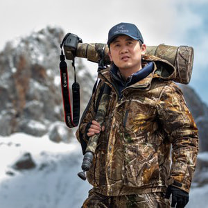
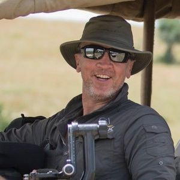
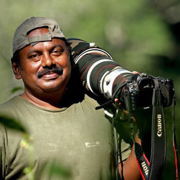
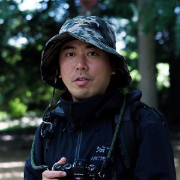
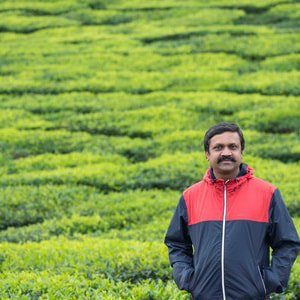
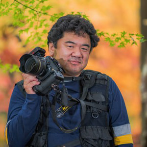
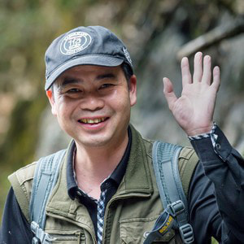
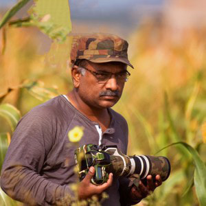
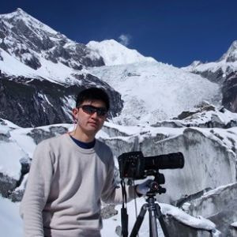

winners gallery 2019
GRAND PRIZE
Story: Manul cats are small wild cats that live in mountains and grasslands around Central Asia. Currently, with the deterioration of the environment, we are worried about survival. This photo was taken on a frigid windy day. I capture a manul cat with a rugged look that protects her own food.
Camera: Nikon D5, Nikon 400mm, 1/1600, f/8.0, ISO 560. EF600mm f/4L IS II USM; 1/1250 sec; f/5.6; ISO 200.
Lumix Award

Story:The mother monkey of Sichuan's Golden Monkey is flying acrobaticly over a tree with a young monkey. Mother monkeys hold their offspring firmly on their long limbs, so they do not have to worry about falling. Don't worry.
Take Care
Qinling, Shaanxi, China
By Qiang Zhang
China
Camera: Canon EOS-1DX, EF70-200mm f/2.8L IS II USM, 1/500, f/2.8, ISO 400.
Sigma Award
Consonance
Guiyang, Guizhou, China
By Jiang Zhizhou
China
Camera: Canon EOS 5DS, 234mm, 1/500, f/5, ISO 3200
Wildlife
WINNER WILDLIFE
Story: The Royal Bengal tiger is a fantastic and noble creature and this moment shows it hundred percent. The place, the light, the moment, and the tiger itself, all was perfect. This huge tiger male was taken during the dry season in my second home - Ranthambore!Camera: Canon EOS-1D X Mark II, Canon EF 300mm f/2.8L IS II USM, 1/3200. F2.8, ISO 320.
HIGHLY HONORED WILDLIFE

Story: After spending a week at 4000m altitude searching for the elusive "mountaincat" - a snow leopard, I was finally rewarded with a sighting of this magnificent cat descending asnowy slope.
The Snow Cat
Hemis National Park, India
By Ben Cranke
Ben Cranke / UK
Camera:Nikon D800, Nikon 600mm F4, 1/2000, F6.7, ISO 800.
HIGHLY HONORED WILDLIFE

Story:As we were driving in the foothills of Anamalai tiger reserve for birding one late evening, suddenly we heard a commotion. As drongos were attacking something we stopped the jeep to have a look at it and to our surprise, we saw a slender grey loris being mobbed by drongos. I got a few shots before it disappeared into the bushes, a pleasant surprise for us because it's generally a nocturnal species. I was lucky to get him in the daytime.
Loris Acrobat
Anamalai Tiger Reserve, India
By Prakash Ramakrishnan
India
Camera: Canon 1dx, Canon 600 f4, 1/200, F8, ISO 160.
HIGHLY HONORED WILDLIFE
Sprint
Kendekeke, Qinghai, China
By Jiao Shengfu
China
Camera:Canon EOS 5D Mark III, Canon 200mm, 1/1250, F3.2, ISO 100.
HIGHLY HONORED WILDLIFE

Story:One hundred years ago, the Ezo sable was nearly extinct due to over-harvestacquisition of fur. That is probably the reason they are very alert and rarelyshow up in the daytime.In the early morning of snowy day, I found an animal trail, and I found thisanimal looking at me with caution.I held my breath and brought the camera close to my face, released theshutter and I left the place quietly.Now to capture this spices is banned, but it is again threatened by alien speciesbrought in by human being.
Serious Looking
Daisetsuzan National Park, Hokkaido, Japan
By Shin Okamoto
Japan
Camera: Fujifilm X-T2, Fujifilm XF100-400mmF4.5-5.6 R LM OIS WR, 1/125, F5.6, ISO 320.
HIGHLY HONORED WILDLIFE

Story: On a cold morning drive into the grasslands of Dhikala, Corbett, we werefollowing pugmarks of a tigress and reachedthe end of the grassland. A mixed group (females and males) of Spotted Deerswere grazing and a pair of Common Myna wasresting on one of the stag. Generally the stag’s fight for females, and the fightis always head bunting. This behavior was different than what I had observedbefore.
Stags - A fight
Corbett National Park, India
By Kesavamurthy Narasimhamurthy
India
Photographer's Website
Camera:Nikon D500, AF-S Nikkor 500mm VR II lens, 1/350, F/4, ISO 400.
LANDSCAPE
WINNER LANDSCAPE
Story: The Bajiaozhai National Forest Park is located in the resource county of Guangxi, China. It has a high terrain and complex terrain, so it has obvious mountain climate characteristics and typical Danxia landform. On that day, before dawn, we set off and climbed for more than an hour on the mountain roads to reach the top of the mountain until sunrise to take pictures.Camera:Nikon D800E, Nikon 17-35MM F/2.8, 1/6, F13, ISO 100.
HIGHLY HONORED LANDSCAPE
Story:Bromo Tengger Semeru National Park (East Java) is one of the best landscape destinations in Indonesia, where when it is foggy, this place will be a beautiful place and very mystical. To photograph this moment requires good luck and good weather, a great struggle in the face of cold weather in the morning.Camera:Canon 5DSR, Canon 11-24mm, 1/30, F8, ISO 400.

HIGHLY HONORED LANDSCAPE
Story:Usva Stone Pillars is a unique huge granite massif 120 meters high on the right bank of the Usva river, composed of limestone. On the stones you can find prints of ancient corals, brachiopods and other fossils, reminiscent of that the sea was splashing here many millions of years ago. Devil’s Rock is a detached cliff, looking like a giant's finger, enchants with its beauty. First of all, it affects its structure and size, and then how it is held on such a thin “leg”. I have spent there 3 nights in October to catch a good morning light and fog. A lone fisherman on the boat added some charm to the picture.Camera: Nikon D810, Nikon 24-120, 1/40, F10, ISO 100.
HIGHLY HONORED LANDSCAPE
Story: The photo of this majestic waterfalls was taken in Luang Prabang, Laos, home to hundreds of most beautiful waterfalls in the world. Its incredibly blue water together with the natural pools and round rocks create a unique scenery. The wind was blowing toward my lens during that time and my lens was all wet most of the time, I have to wipe clean every few seconds in between shots.Camera: Canon EOS 6D, EF16-35mm f/2.8L II USM, 2, F22, ISO 100.
HIGHLY HONORED LANDSCAPE
Story: We Japanese believe that climbing up to the sacred mountain, watching the rising sun is to connect with after life, making one step closer to gods world. The time I climbed one of those sacred mountains, it was so foggy that could see nothing. It was too windy that I waited until the fog cleared out, setting my camera lens to catch the fog sliding. After the dawn, it was only for 30 seconds I was in the gods world, a phenomenon view. Time was very limited but I was so fortunate to meet the perfect moment, had what I wanted.Camera: Canon EOS 5D Mark IV, EF16-35mm F4L IS USM, 5, F18, ISO 100.
HIGHLY HONORED LANDSCAPE

Story:The temperature was -17 ° C in heavy fog, I was waiting for this moment at the Kirigamine Plateau from the midnight, the moment of the fog was all cleared out and the diamond dusts were flying around. The sun rose and shine through with sun pillar phenomenon.It was a mysterious sight, almost like a reign of light. All the conditions are aligned to create a beauty of light and shadow in the world of natural hoarfrost.
Light and Shadow
Kirigamine Plateau, Nagano, Japan
By Masahiro Kimata
Japan
Photographer's Website
Camera: Nikon D850, AF-S NIKKOR 80- 400mm f/4.5- 5.6G ED VR, 1/60, F5.6, ISO 64.
OCEAN
WINNER OCEAN
Story: Mikura island of Japan is famous for the habitat of Indo-Pacific bottlenose dolphins. Currently more than 160 dolphins live. And last year 20 babies were born. The dolphins of Mikura island are given names from the characteristics of each body. They are completely wild dolphins, but they are called by their name and loved by many peoples. They make various shapes in groups. At that time, They swam in a line. I swam with dolphins of Mikura island of my desire and received their welcome.
Camera: Nikon D810, SIGMA 15mm F2.8 EX DG DIAGONAL FISHEYE with Housing Anthis,Nexus D810, 1/250, F9, ISO 450.
HIGHLY HONORED OCEAN
Story: When I visited Ishigaki Island in summer, the sea water temperature was around 30℃ and the anemone was weak and the color was faded. This photo was taken on winter. The sea water temperature fell, the debilitating sea anemone recovered and returned to its original color. A small anemone fish came out from the gap. And said “Look at me! “.Camera:Nikon D800, AF-S VR Micro- Nikkor 105mm f/2.8G IF-ED with Housing Anthis,Nexus D810, 1/125, F13, ISO 125.
HIGHLY HONORED OCEAN
Story: A white-banded cleaner shrimp hopped into the mouth of a moray eel to have some food leftover. While at the same time, the moray eel has its teeth cleaned by the shrimp. This cleaning behavior ensures both species getting benefit from this symbiotic relationship.Canon 5DS, Canon EF100mm/f2.8L Macro 1/200, F16, ISO 800, Ikelite DS161 w. Retra LSD.
HIGHLY HONORED OCEAN
Story:The psychedelic frogfish is different from many other anglerfishes in that it has a tiny luring appendage on its forehead. It has a relatively flat face with a mouth smaller than that of most anglerfishes.Camera: Canon EOS 5Ds R, Canon EF 100mm f/2.8 L Macro IS USM Lens, 1/250, F20, ISO 400, SEACAM SEAFLASH 150 DIGITAL.
HIGHLY HONORED OCEAN
Story: The symbiosis between jellyfish and fish is my favorite blackwater subject. Fish would hide in jellyfish and use jellyfish toxins to protect them from predators, jellyfish just like a shield. As most blackwater subjects are marine lives at their larva stage which are transparent, I was surprised by the sudden appearance of a bright color in the dark sea.Camera:Nikon D850, Nikon AF-S Micro NIKKOR 60mm f/2.8G ED, 1/160, F22, ISO 400
HIGHLY HONORED OCEAN
Story: This photo of seahorse giving birth was taken in Minamata, Kumamoto in Japan. Minamata city is famous for Minamata disease. I call this photo “New life”. It’s not only new life for sea horses but also for Minamata . Over the years, with the government's efforts, Mercury pollution has been fullyaddressed，Minamata bay is now back to life. I spent three weeks in Minamatacity to take this picture. Three dives every day ，in 20℃ cold water , from 1 am to 7 am. Maybe it was the hardest dive of my career, but it was also the most enjoyable. Because of the wonderful subject and the meaning behind the photo.Camera: Nikon D850, Nikon AF-S Micro Nikkor 60mm f/2.8G 1/250, F32, ISO 250, Retra Original
SMALL WORLD
WINNER SMALL WORLD
Story: Ants usually swarm their food in large numbers, often aggressively. It was a not so common sight when I met just these two weaver ants on a branch. As we know ants are strong and can carry many times their body weight, any one of these 2 ants really doesn’t need a helping hand. In this image they were moving to-and-fro as if helping to carry the food home, and then stopping momentarily as if pulling against each other fighting for the food. I was waiting for that moment when they were relatively stationary and click and got this image.Camera: Nikon D500, Tamron SP Di AF90mm f2.8 MACRO, 1/160, 22, ISO 200, YONGNUO YN685.
HIGHLY HONORED SMALL WORLD
Story: This piece is taken at a local autumnal spot. Leaves were caught in the spider's web which was stretched between the trees. Spider seemed to enjoy the fall season. By putting the autumn leaves in the background as well, I expressed colorful autumn scenes.Camera: Canon eos 5Dmark3, EF70-200mm f/2.8L IS II USM, 1/13, F5, ISO 100
HIGHLY HONORED SMALL WORLD
Story: The bees after the meal, the face is covered with food, and the food is hung on the legs and taken home.Camera: Nikon D7200, Nikon 18-105MM, 1/2500, F5, ISO 1100.
HIGHLY HONORED SMALL WORLD
The White CrabSpider
Sultanate of Oman
By Ghaniya Almajrafi
Oman
Camera: Canon 600D, Canon100mm macro, 1/320, F8, ISO 200; Canon Speedlite 430EX II.
HIGHLY HONORED SMALL WORLD
Damselfly
Ningbo, Zhejiang, China
By Guanghui Gu
China
Camera: Canon EOS 5DMark III, EF100mm f/2.8LMacroIS USM, 1/160, F5, ISO 500.
HIGHLY HONORED SMALL WORLD
Mycena lux-coeli
Kochi, Japan
By Minoru Yamasaki
Japan
Camera: : Nikon D5200, Nikon Macro105mm, 1/265, F8, ISO 400.
BIRDS
WINNER BIRDS

Story: In the early spring of March, at 5 a.m., before dawn, I sneaked into the grasss hed built in the lake a few days ago and waited patiently. About five hours later, the Phoenix came out of the lotus leaf with its two-day-old baby to look for food and play. The intimate relationship between parents and children, strong love, is shown in every minute and second. Every time the couple meets, they show their intimacy.The two children in the warm feathers of their backs enjoy love from time to time, and love is passed on from generation to generation.
Love
Jiangxi, China
By Wenming Tang
China
Camera: Nikon D4, AF-S NIKKOR800mm f/5.6E FLED VR, 1/1000, f/7.1, ISO 800; ISO 800.
HIGHLY HONORED BIRDS

Story: This image was captured on a misty morning of Sept. 2018! It was low light but the mist created the moody feel. And this bird was callingfrom a beautiful perch in response to a distant call. We had to use a high ISO to get a decent exposure. We were lucky to get up-close!
Painted Francolin!
Hubli, Karnataka,India
By Chandrashekhar Shirur
India
Photographer's Website
Camera: Canon 7D mark II, Canon 400mm 5.6 with 1.4 XT.C., 1/640, F8, ISO 4000.
HIGHLY HONORED BIRDS
Chatting
Baihualing, Hainan, China
By Lei Ming
China
Camera: Canon EOS-1D X, Canon 600mm ,1/2000, F5.6, ISO 6400.

HIGHLY HONORED BIRDS
GreaterFlamingos duringsunrise at Askercoast, Bahrain
Asker Coast, Bahrain
By Dr Ajay Kumar Singh
Bahrain
Photographer's Website
Camera: Canon EOS 1DXMark II, Canon EF 400mm f/2.8L IS II USM +Canon ExtenderEF 2X III, 1/1000, F5.6, ISO 800.
HIGHLY HONORED BIRDS

Story: In winter, when shooting birds in Hokkaido, Japan, such as wild red-crowned cranes, most photographers use ultra-long focal lenses and like to take close-ups. But I only had a long focal lens of 80-400 mm, so I carefully observed the scene environment, and found that the dense mountains and forests in the distance in the heavy snow , beautiful feeling is very strong in such background. Then I waited for the opportunity, intending to combine birdswith the background to shoot. Finally, when a group of red-crowned cranes came back at that place, I pressed shutter. It was like a Chinese ink painting, full of beauty.
Stork goes to the picture
Hokkaido, Japan
By Ming Li
China
Camera: Nikon D3X, Nikkor AF VR 80-400/4.5-5.6D ED, 1/800, F5.6, ISO 250.
HIGHLY HONORED BIRDS
Love Kiss
China
By Chuanshan Zhang
China
Camera: Canon 1D X Mark II, 200-400mm ƒ/4L IS USM lens; 1.4x extender at 560mm, 1/1328, F7.1, ISO 500.
JUNIOR
WINNER JUNIOR
The Quarrelling Children
Keoladeo National Park, India
By Wewin Pandian J
India
Photographer's Website
Camera: Nikon D850, Nikkor 400mmF2.8 AF-S E FL ED VR, 1/2000, F2.8, ISO 64.
HIGHLY HONORED JUNIOR
Story: I'm always touched and amazed by the tenderness of the interaction between animals. I took this sweet shot of an elephant calf calling out to his mother, atthe Corbett Tiger Reserve. I feel this is a perfect shot which captures the closely knit bond between a mother and her child. The calf's happy carefree call as he walked with his herd showed me how protected and secure he felt as he knew how his mother would always be only one call away.
Camera: Canon 1DX, Canon 500 f4, 1/1250, F4, ISO 800.
HIGHLY HONORED JUNIOR
Story: I was photographing some waterbirds in a lake near a small hamlet called Perur in southern India. I noticed a family of spotted owlets on the opposite side. There were four of them perched on a dead coconut tree stump. Just then something interesting happened.A group of mynas started mobbing them. The owlets let out a shrill cry and all four them stood their ground. Itwas amazing to see them so united. The ground was very undulated so I could not set the tripod. It was a very challenging as I took a hand held shot as the equipment was very heavy. I waited for almost 3 hours to take this image.Canon 1DMK4, Canon 300 f 2.8 +2x converter, 1/320, F5.6, ISO 640.
HIGHLY HONORED JUNIOR
Story: A barasingha stands amongst the dry spring grass, bathed in the warm, golden sunlight. The barasingha, or swamp deer, is unique amongst deer in India because it has more than three tines on its antlers; the name “barasingha” means twelve tined in Hindi. It was a hot April day at the Kanha National Parkas we set out to look for tigers. After an exhaustive search, we stopped to take a break and I almost did not realize that a Barasingha was looking at us inamusement. As I focused my attention on the deer, it froze with a few blades of grass still in its mouth. But slowly it relaxed and became comfortable with our presence. It was calming to embrace the quiet peaceful existence of theanimal as it casually carried on eating.Camera: Canon 80D, Sigma 120-300mm f/2.8, 1/250, F2.8, ISO 100.
HIGHLY HONORED JUNIOR
Story:I still recall this moment when I spotted a greater coucal who was on thee ground, bird was very quiet and calm. Whenever I travel to Kapurthala I always see this bird almost on every trip. It’s obvious incessant call, red eyes, copper brown wings on a black body cannot be missed. It does not fly much and is ashy bird. My best sighting of this was in Kapurthala, where I get to watch thislovely bird foraging on the ground from just a few metres away. I saw this birdtook off and sat on the top of the grasses in this beautiful grassland. Fortunately for me the bird kept on holding on to the grassland with its spreadwings. This bird kept on holding for a long time, we all do not often comeacross a sunning coucal and I snapped few photos from a distance. I got theperfect shot the way I desired and captured this beautiful image of Greater Coucal basking in the sun with it’s spread wings !Camera: Nikon D500, AF-S NIKKOR500MM F/4E FL ED VR, 1/1600, F4, ISO 200.
HIGHLY HONORED JUNIOR
Story: It was early in the morning when sea eagles were scrambling for food. There was still not enough light so I had a hard time for shooting since I couldn't use my shutter speed high enough.Camera: sonyα9, sel100400gm, 1/2000, F6.3, ISO 5000.
VIDEO
VIDEO WINNER
Story: This footage was shot on location in a heavily dived area of Komodo, Indonesia where the highlight is a dive site affectionately know as, The Shot Gun. The name refers to the feeling your body gets as it’s swept in a rapid current that runs between two islands during tidal changes. It truly feels as though you have been shot from a gun. This current is what brings such amazing life to the site. From the surface the current is so strong that it creates small waves. Mantas come to feed, clean and play in this surface current and below the current isrushing much needed nutrients to the coral life on the site. After a long dive ofriding this current, swimming to the lee and then riding it again, I surfaced and donned my snorkel gear to enjoy the mantas that were frolicking just below the surface. Snorkeling or diving, the wild and wicked currents of Indonesia provide endless marine encounters and prolific coral reefs.
{kind=link}
{kind=link}
{kind=link}
{kind=link}
{kind=link}
{kind=link}
{kind=link}
{kind=link}
{kind=link}
{kind=link}
{kind=link}
{kind=link}
{kind=link}
{kind=link}
{kind=link}
{kind=link}
{kind=link}
{kind=link}
{kind=link}
{kind=link}
{kind=link}
{kind=link}
{kind=link}
{kind=link}
{kind=link}
{kind=link}
{kind=link}
{kind=link}
{kind=link}
{kind=link}
{kind=link}
{kind=link}
{kind=link}
{kind=link}
{kind=link}
{kind=link}
{kind=link}
Camera: Canon EOS-1D XMark II, Canon 8-15mmlens in a Seacam Housing
Video Highly Honored

WinterPassion -Red crowned crane
Tsurui, Hokkaido, Japan
By Makoto Ando
Japan
Photographer's Website